Saturday working on order
https://www.canva.com/design/DAGCZFYwanc/KyVkBJbOmZ_NT_4dqyFb3g/edit
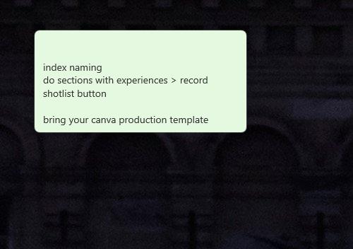
sticky notes
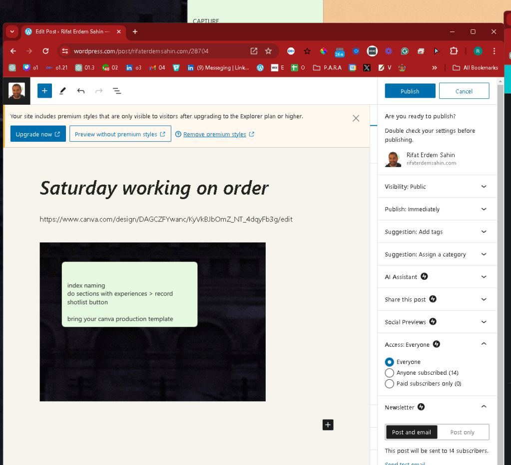
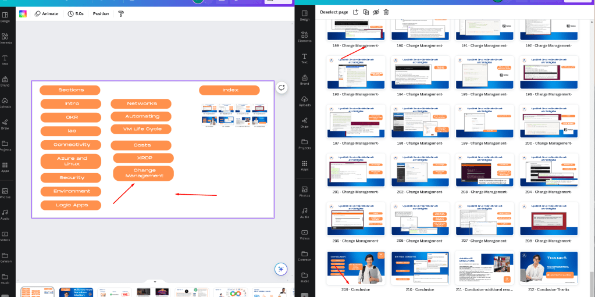
maybe do and apply at the same time
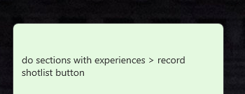
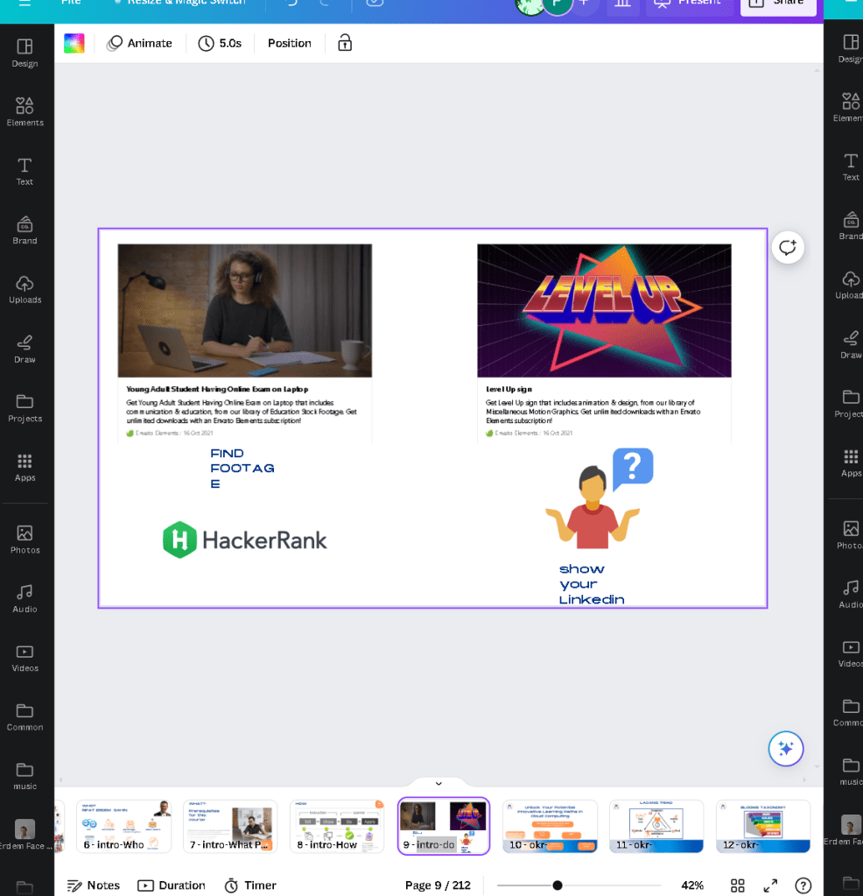
using envato does not make sense it is the editors job >>> delegate to him like the job applications
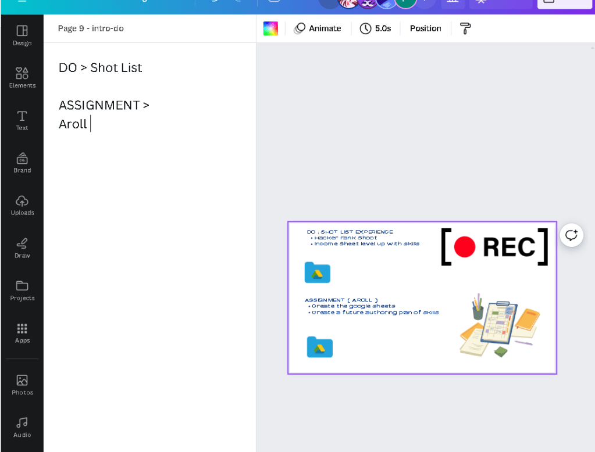
ready recodring the apply section of giving assignment
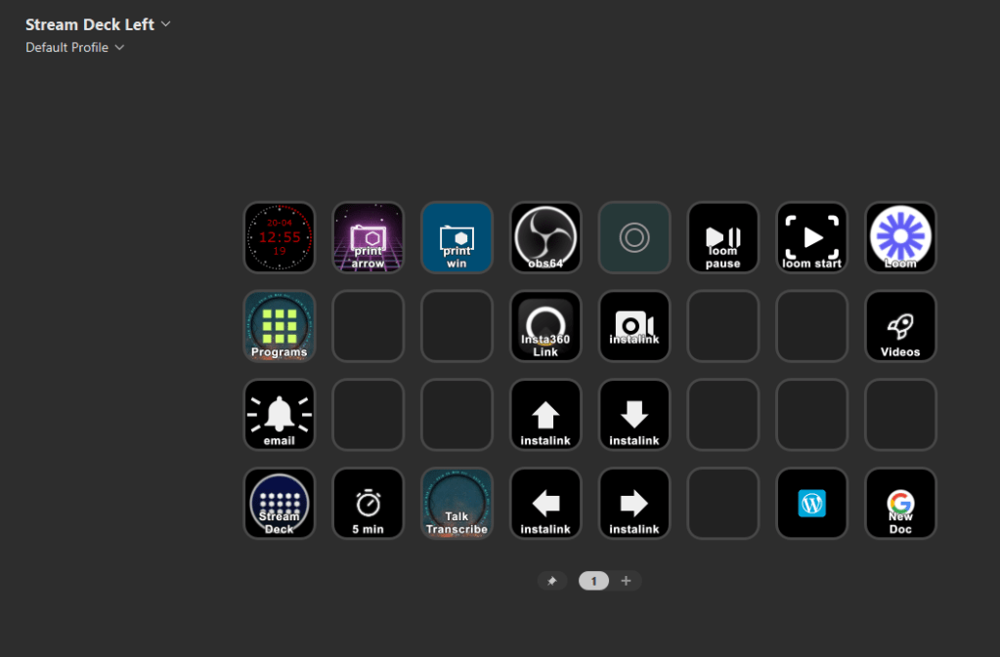
Create the drive folder
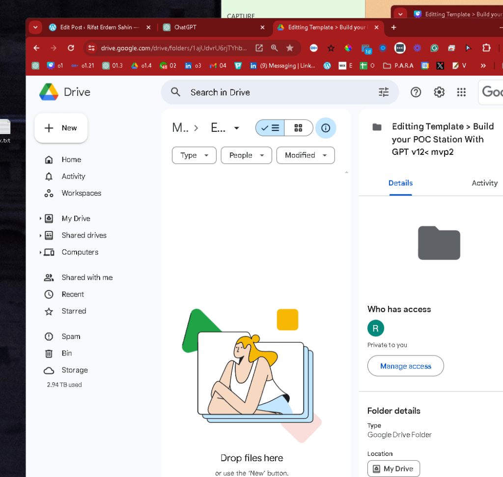
i created the loom video explain it and here is the description as well
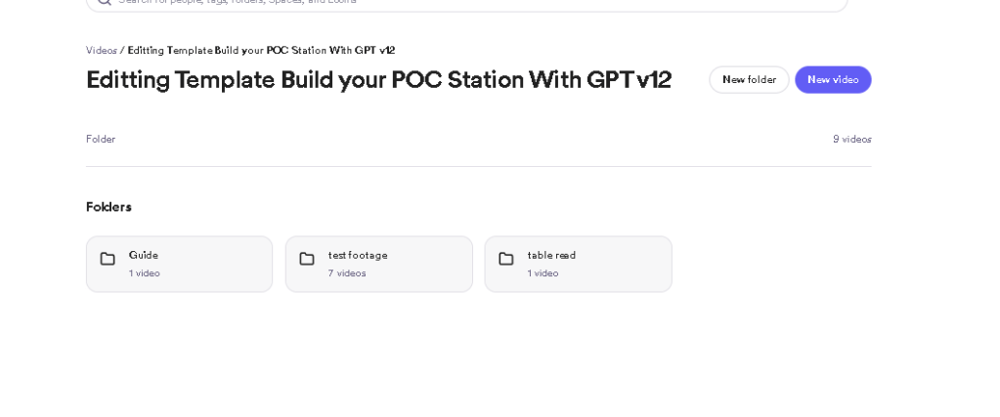
add the files
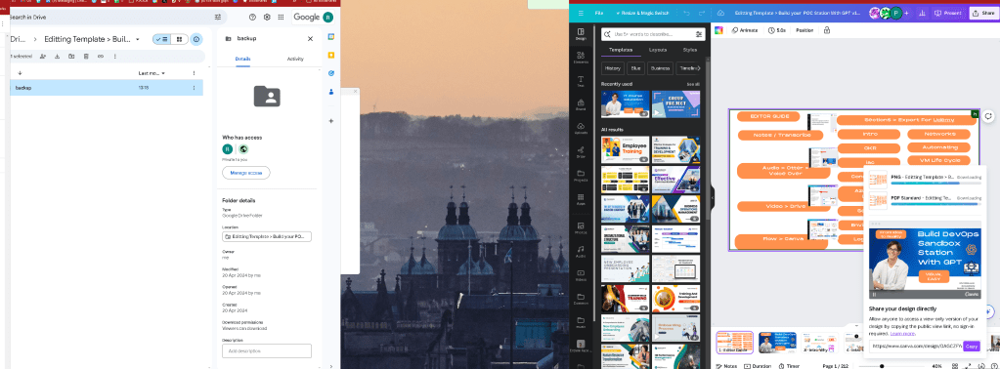
0:01 We have generated this editor's guide and on the editor's guide, uh, as for starters, all of the notes are in the comma notes on here So you will be able to see them, my notes and the transcribe for each slide Uh, for the audio, I'm using otter, you can click on the otter link on here. 0:22 It is public pleasure You can download the voice and you know what is the voice over that's going to be. 0:29 This is mostly a voice over course And then there's the Google Drive. There's some A-rolls for the assignments, for the Apply Sections, and my screen recordings for the two sections. 0:43 You can find them on the Google Drive. And you can export the output of everything on here of all of this flow. 0:50 This flow is the order that I expect this video course to be created. And there is all these sections that we are creating the course force of, I want to make sure that we have all these sections that are created on here. 1:05 So if there's one, two, three, four, five, six, seven, eight. I can't correct, yes. Eight, I should have put them together, 15. 1:14 If there is 15 pieces on here, I expect these 15 videos to come out. I might have to break them into smaller chunks in here, because this is the intro, intro can be the only one that explains everything that goes on here, though. 1:34 So the 15 videos could be all right. But I don't expect all of these images to be used and all of these to be shown. 1:43 The editor can always replace with the inverter library with anything that they have. They should be able to replace it on here, though. 1:53 So because it's a multi approach, I need to make sure that I see the Enbatos, Enbatos, Enbatos. Invoice, I'll just write it on here, the design, I'll fail, I'll come to here as long As long as the editor can provide the footage library in voice, he can produce the output, the output, and use the flow 2:36 , use the flow and use the images in the comma comma one or wall, they can use all of it or one part of it. 2:48 So everything that I'm reading is on the left hand side, on the otter side, on here, I will show it one more time. 2:56 You can use all these images. You can use different images as well. I tried to make it useful, practical for myself, but I'm recording them On Otter, I will just copy this on here and if I open this up in a new tab, you are going to see that this opens up the otter. 3:15 And in the otter, if you have an account on here, this is none account. If you go in with any account, then you are going to see that there is an export function on here. 3:26 You should be able to export everything on here on the right hand side. there's an export function and it's going to download the MP3 and the file and you can see what I'm talking about here, but it's a tinkier, if you want to comment and share, you can do this on here and this is the other parts, you 3:47 can read all of them on top, you can use the animations on here, there's all these animations that are added or not use the animations and use something completely different on here. 4:00 That is the editor's choice. I don't want to lock the editor. This is giving me the idea to be able to read. 4:06 I also put the scripts on to here. You can see all my notes on the left-hand side on here, but you are going to go through the audio recording on here. 4:16 If each section has these, as I mentioned, all these markers on here to make it easier, and what I will do is when we go to the do section, do and do an apply for this section. 4:32 Each course has the do's and the applies. Do's can be scattered. Inside these do parts, I'm sharing the experience. Assignments, these are mostly at the end, and these are insights, we need to make sure I show the heckerank shots, so heckerank is here. 4:55 You have to use it here, but the assignment is at the end. I'm telling the audience to have some kind of an assignment, and if I put the assignment on here, I will put the error. 5:08 SMS, certainly hello everyone. I will read this and you will be able to go to Google Drive this location. You can just take this, copy this and go to this Google Drive location. 5:19 And what I make sure that I create these, I share this in a public approach. So everybody should be able to download them, upload them on here. 5:29 So I will just give them anybody to be able to become an editor, you should be able to come in here and do the work, complete your work over there, though, so all these two shots and they are here, that this is the main flow. 5:44 But as I said, you can, the editor has the last word in it, though, I'm doing this to tell show, do a play, but once we merge it with Da Vinci or the editor tool, I will release these to different formats. 6:00 So what I expect is, I should be able to have the UDM versions of all of this so I can target the UDM platform and download all my videos to be able to publish them there.
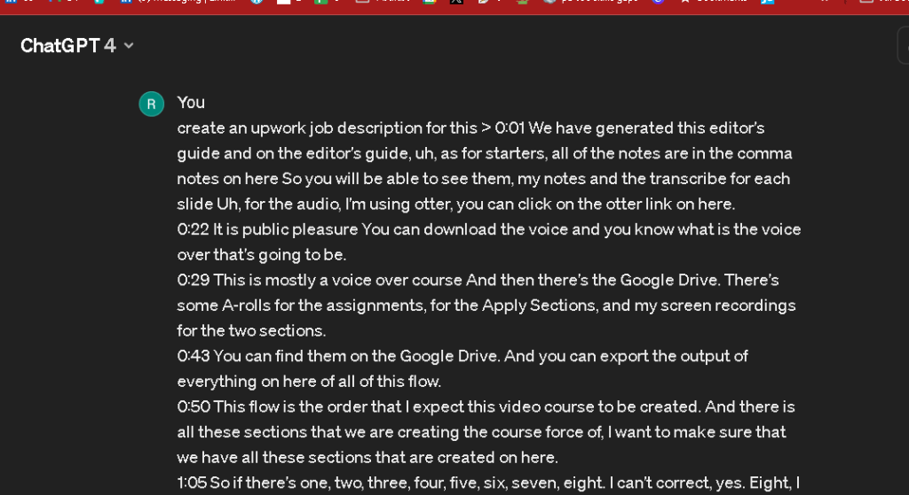
Upwork Job Title: Video Editor Needed for Online Course Production
Job Description:
We are seeking a skilled video editor to join our team and help create a comprehensive online course. The project involves compiling and editing 15 video segments from a variety of sources, including audio recordings, screen captures, and existing video clips.
Responsibilities:
-
Review and edit audio transcriptions provided via Otter.ai, ensuring clarity and accuracy in the final video text overlays.
-
Organize and edit video content according to the provided storyboard, which outlines a specific flow and order for the course modules.
-
Incorporate A-roll footage and screen recordings, available on Google Drive, to enhance the learning experience.
-
Utilize an extensive library of images and animations—editors have the flexibility to select or replace these as deemed fit to better suit the course content.
-
Export, assemble, and finalize videos to reflect the overall course objectives and maintain educational coherence.
-
Work with platforms like Da Vinci or other specified editing tools to merge and format videos for final publication.
Requirements:
-
Proven experience in video editing with a portfolio demonstrating your ability to handle projects involving multiple media sources.
-
Strong proficiency in using video editing software (e.g., Adobe Premiere Pro, Final Cut Pro, Da Vinci).
-
Excellent time management skills to adhere to project deadlines.
-
Ability to work independently and make editorial decisions based on the course requirements.
-
Experience with audio editing and transcription software, specifically Otter.ai, is preferred.
-
Familiarity with Google Drive for accessing and organizing project files.
Project Deliverables:
-
15 edited videos, each aligning with the specified sections of the course.
-
Finalized videos should be ready for upload to the UDM platform, formatted according to the platform's specifications.
How to Apply:
Please submit your resume, cover letter, and a link to your portfolio showcasing relevant video editing projects. Highlight any experience with educational content or similar comprehensive editing tasks.
This is a freelance, project-based position with a timeline to be discussed upon hiring. We appreciate creativity and flexibility in using provided materials to produce engaging and informative course content.
Location:
Remote
Feel free to reach out with any questions or to discuss the project in more detail. We look forward to your application and hope to collaborate soon to create an impactful learning experience.
Use the timeline to deliver it > expect them to record it > learn edit over them >> get into the process
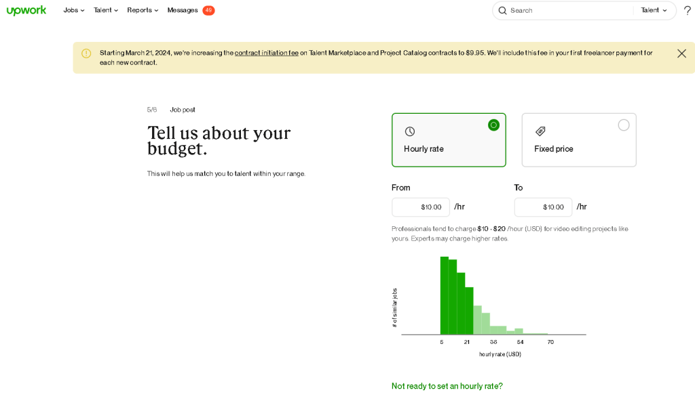
max size does not hold up
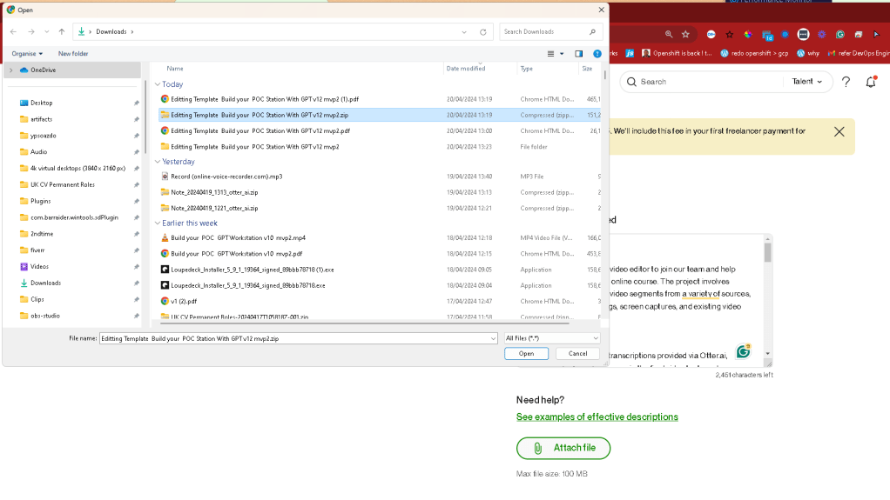
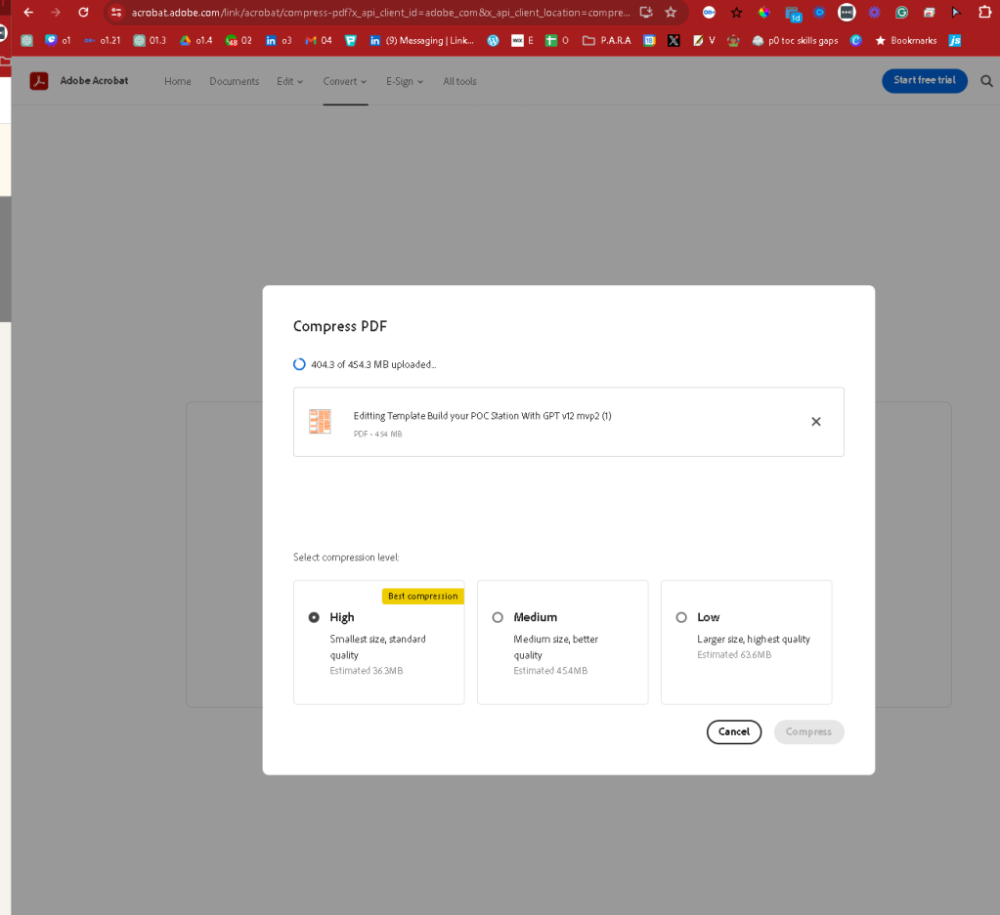
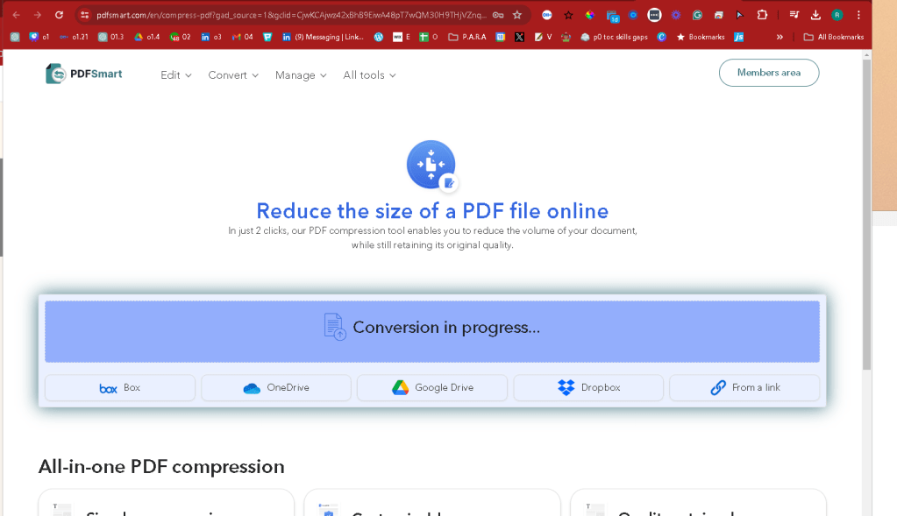
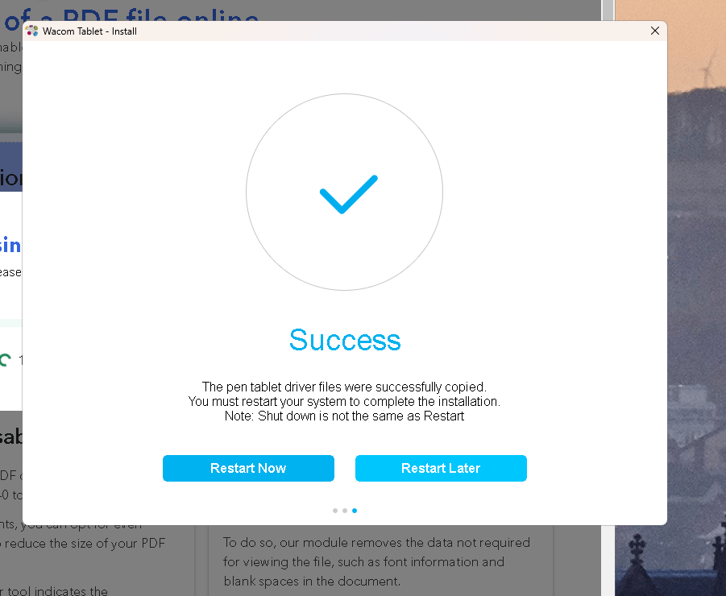
editting-template-build-your-poc-station-with-gpt-v12-mvp2-1-compressedDownload
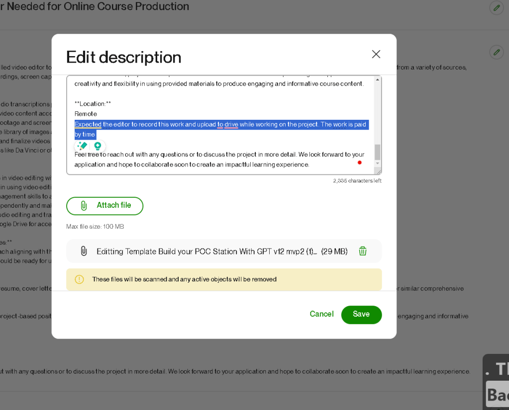
invited
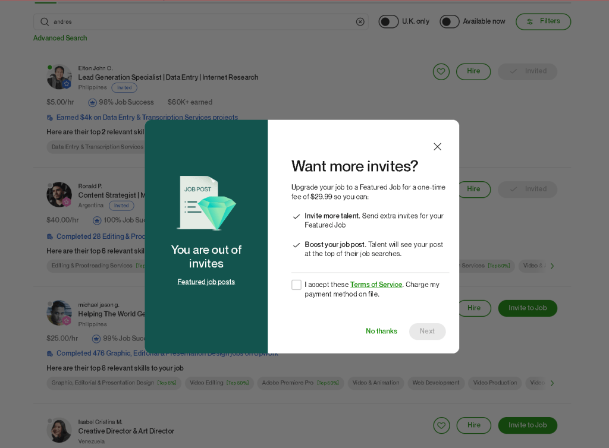
Imported from rifaterdemsahin.com · 2024